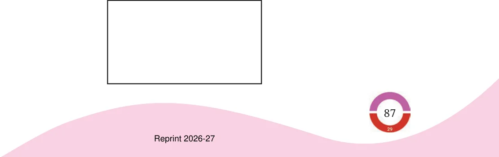
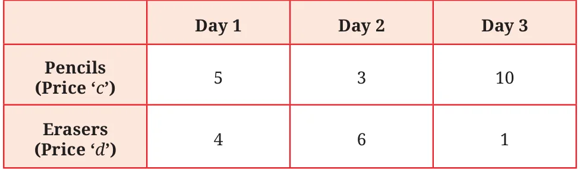
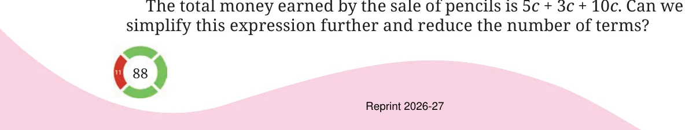
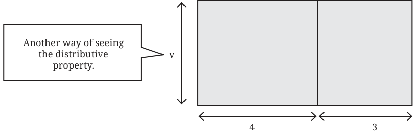
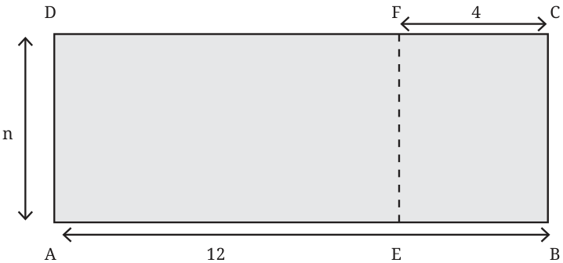
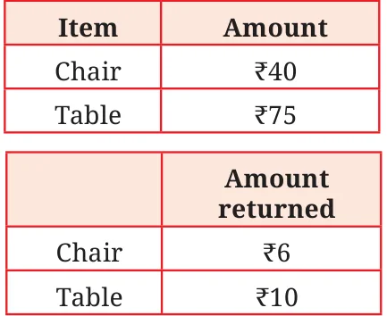
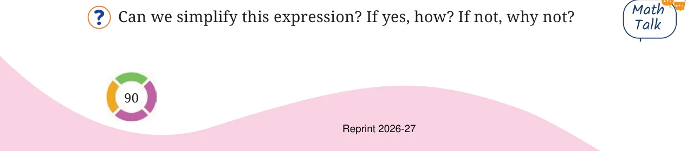
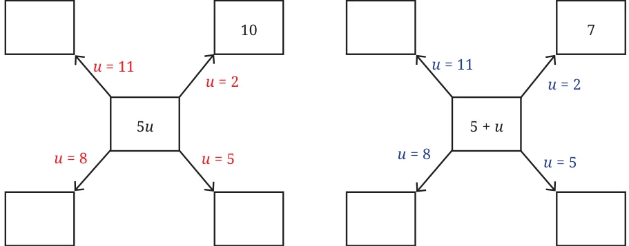
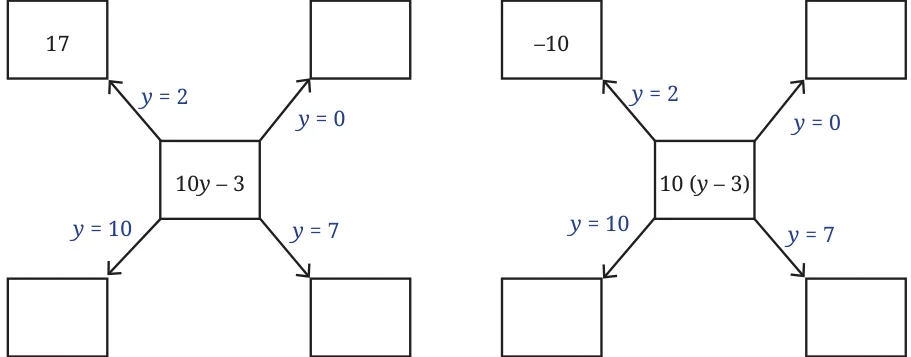
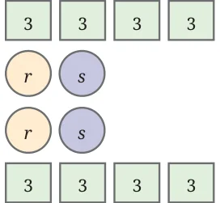

<!DOCTYPE html>
<html lang="en">
<head>
<meta charset="UTF-8">
<meta name="viewport" content="width=device-width,initial-scale=1">
<title>4.4 Simplification of Algebraic Expressions — Expressions using Letter Numbers</title>
<meta name="description" content="Class 7 Mathematics · Part 1 · Expressions using Letter Numbers · 4.4 Simplification of Algebraic Expressions">
<link rel="icon" href="data:image/svg+xml,<svg xmlns='http://www.w3.org/2000/svg' viewBox='0 0 100 100'><text y='.9em' font-size='90'>📘</text></svg>">
<link rel="stylesheet" href="../../../assets/book.css">
<link rel="stylesheet" href="https://cdn.jsdelivr.net/npm/katex@0.16.11/dist/katex.min.css" crossorigin="anonymous">
</head>
<body>
<header class="topbar">
<div class="topbar-in">
  <div class="crumb">
    <span class="c1"><a href="../../../index.html">Library</a> · <a href="../../index.html">Class 7 Mathematics · Part 1</a></span>
    <span class="c2">Expressions using Letter Numbers · 4.4 Simplification of Algebraic Expressions</span>
  </div>
  <a class="tb-btn" data-nav="prev" href="../../04-expressions-using-letter-numbers/05-mind-the-mistake-mend-the-mistake/index.html" title="Mind the Mistake, Mend the Mistake">←</a>
  <details class="drawer"><summary class="tb-btn" title="Sections in this chapter">☰</summary>
<div class="drawer-panel"><div class="dh">Expressions using Letter Numbers</div><a href="../01-the-notion-of-letter-numbers-4.1/index.html">4.1 The Notion of Letter-Numbers</a><a href="../02-figure-it-out/index.html">Figure it Out</a><a href="../03-revisiting-arithmetic-expressions-4.2/index.html">4.2 Revisiting Arithmetic Expressions</a><a href="../04-omission-of-the-multiplication-symbol-in-algebraic-express-4.3/index.html">4.3 Omission of the Multiplication Symbol in Algebraic Expressions</a><a href="../05-mind-the-mistake-mend-the-mistake/index.html">Mind the Mistake, Mend the Mistake</a><a href="../06-simplification-of-algebraic-expressions-4.4/index.html" aria-current="page">4.4 Simplification of Algebraic Expressions</a><a href="../07-figure-it-out/index.html">Figure it Out</a><a href="../08-mind-the-mistake-mend-the-mistake/index.html">Mind the Mistake, Mend the Mistake</a><a href="../09-pick-patterns-and-reveal-relationships-4.5/index.html">4.5 Pick Patterns and Reveal Relationships</a><a href="../10-formula-detective/index.html">Formula Detective</a><a href="../11-algebraic-expressions-to-describe-patterns/index.html">Algebraic Expressions to Describe Patterns</a><a href="../12-patterns-in-a-calendar/index.html">Patterns in a Calendar</a><a href="../13-matchstick-patterns/index.html">Matchstick Patterns</a><a href="../14-figure-it-out/index.html">Figure it Out</a><a href="../15-summary/index.html">SUMMARY</a><a href="../16-expressions-using-letter-numbers/index.html">Expressions Using Letter–Numbers</a><a href="../17-figure-it-out/index.html">Figure it Out</a><a href="../18-figure-it-out/index.html">Figure it Out</a><a href="../19-figure-it-out/index.html">Figure it Out</a></div></details>
  <a class="tb-btn" data-nav="next" href="../../04-expressions-using-letter-numbers/07-figure-it-out/index.html" title="Figure it Out">→</a>
  <button class="tb-btn" data-theme-toggle title="Toggle light / dark" aria-label="Toggle light or dark theme">◐</button>
</div>
<div class="progress"><span style="width:43.3%"></span></div>
</header>
<main class="wrap">
<div class="sec-head">
  <p class="eyebrow"><a href="../index.html">Chapter 4 · Expressions using Letter Numbers</a></p>
  <h1>4.4 Simplification of Algebraic Expressions</h1>
  <p class="sec-meta">Textbook pages 7–13 · 15 figures</p>
</div>
<article class="prose">
<p>Earlier we found expressions to find perimeters of different regular figures in terms of their sides. Let us now find an expression to find the perimeter of a rectangle.</p>
<figure class="fig wide"></figure>
<p>As in the previous cases, we will first describe how to get the perimeter when the length and the breadth of the rectangle are known: Find the sum of length + breadth + length + breadth. Let us use the letter-numbers l and b in place of length and breadth respectively. Let p denote the perimeter of the rectangle. Then we have \(p = l + b + l + b\) As we know, these represent numbers, and so the terms of an expression can be added in any order. Hence the above expression can be written as: \(= l + l + b + b\) As \(l + l = 2 \times l = 2l\), and \(b + b = 2 \times b = 2b\), we have</p>
<div class="mathblock"><p>\(p = 2l + 2b\).</p></div>
<p>Notice that the initial expression (l \(+ b + l +\) b) and the final expression \((2l + 2b)\) that we got for the perimeter look different. However, they are equal since the expression was obtained from the initial one by applying the same rules and operations we do for numbers; they are equal in the sense that they both take the same values when letter- numbers are replaced by numbers. For example, if we assign \(l = 3\), \(b = 4\), we get</p>
<div class="mathblock"><p>\(l + b + l + b = 3 + 4 + 3 + 4 = 14\), and \(2l + 2b = 2 \times 3 + 2 \times 4 = 14\).</p></div>
<p>We call the expression \(2l + 2b\) the simplified form of \(l + b + l + b\). Let us see some more examples of simplification. Example 5: Here is a table showing the number of pencils and erasers sold in a shop. The price per pencil is c, and the price per eraser is d. Find the total money earned by the shopkeeper during these three days.</p>
<figure class="fig table-fig wide"></figure>
<p>Let us first find the money earned by the sale of pencils. The money earned by selling pencils on Day 1 is 5c. Similarly, the money earned by selling pencils on Day 2 is _____, and Day 3 is ______.</p>
<figure class="fig wide"></figure>
<p>The expression means 5 times c is added to 3 times c is added to 10 times c. So in total, the letter-number c is added \((5 + 3 + 10)\) times. This is what we have seen as the distributive property of numbers. Thus,</p>
<div class="mathblock"><p>\(5 \times c + 3 \times c + 10 \times c = (5 + 3 + 10) \times c\)</p></div>
<p>\((5 + 3 + 10) \times c\) can be simplified to \(18 \times c = 18c\).</p>
<p>If \(c =\) ₹50, find the total amount earned by the scale of pencils.</p>
<p>Write the expression for the total money earned by selling erasers. Then, simplify the expression. The expression for the total money earned by selling pencils and erasers during these three days is \(18c + 11d\).</p>
<p>Can the expression \(18c + 11d\) be simplified further? There is no way of further simplifying this expression as it contains different letter-numbers. It is in its simplest form. In this problem, we saw the expression \(5c + 3c + 10c\) getting simplified to the expression 18c.</p>
<p>Check that both expressions take the same value when c is replaced by different numbers.</p>
<p>Example 6: A big rectangle is split into two smaller rectangles as shown. Write an expression describing the area of the bigger rectangle.</p>
<figure class="fig wide"></figure>
<p>The areas of the smaller rectangles are 4v sq. units and 3v sq. units. The area of the bigger rectangle can be found in two ways: (i) by directly using its side lengths v and \((4 + 3)\), or (ii) by adding the areas of the smaller rectangles. The first way gives 7v, and the second way gives \(4v + 3v\). We know that they are equal: \(4v + 3v = 7v\), and this is the required expression for the area of the bigger rectangle. As earlier, a big rectangle is split into two smaller rectangles as shown</p>
<figure class="fig wide"></figure>
<p>Even in this case, the area of rectangle AEFD can be found in two ways: (i) by directly using the side lengths n and \((12 - 4)\), or (ii) subtracting the area of the rectangle EBCF from that of ABCD.</p>
<figure class="fig"></figure>
<p>The first method gives us 8n, and the second method gives us \(12n - 4n\), and they are equal, since \(12n - 4n = 8n\). This is the expression for the area of the rectangle AEFD. Sets of terms such as (5c, c, 10c), (12n, \(- 4n)\) that involve the same letter-numbers are called like terms. Sets of terms such as {18c, 11d} are called unlike terms as they have different letter-numbers. As we have seen, like terms can be added together and simplified into a single term. Example 7: A shop rents out chairs and tables for a day’s use. To rent them, one has to first pay the following amount per piece. When the furniture is returned, the shopkeeper pays back some amount as follows. Write an expression for the total number of rupees paid if x chairs and y tables are rented. For x chairs and y tables, let us find the total amount paid at the beginning and the amount one gets back after returning the furniture. Describe the procedure to get these amounts. The total amount in rupees paid at the beginning is \(40x + 75y\), and the total amount returned is \(6x + 10y\). So, the total amount paid \(= (40x + 75y) - (6x + 10y)\).</p>
<figure class="fig table-fig"></figure>
<figure class="fig wide"></figure>
<p>Recalling how we open brackets in an arithmetic expression, we get</p>
<div class="mathblock"><p>\((40x + 75y) - (6x + 10y) = (40x + 75y) - 6x - 10y\)</p></div>
<p>Since the terms can be added in any order, the remaining bracket can be opened and the expression becomes \(40x + 75y + - 6x + - 10y\) We can group the like terms together, This results in</p>
<div class="mathblock"><p>\(40x + - 6x + 75y + - 10y\)</p><p>\(= (40 - 6)x + (75 - 10)y\)</p><p>\(= 34x + 65y\).</p></div>
<p>The expression \((40x + 75y) - (6x + 10y)\) is simplified to \(34x + 65y\), which is the total amount paid in rupees.</p>
<figure class="fig side-fig"></figure>
<p>Could we have written the initial expression as</p>
<div class="mathblock"><p>\((40x + 75y) +\) ( \(- 6x - 10y)\)?</p></div>
<p>Example 8: Charu has been through three rounds of a quiz. Her scores in the three rounds are \(7p - 3q\), \(8p - 4q\), and \(6p - 2q\). Here, p represents the score for a correct answer and q represents the penalty for an incorrect answer.</p>
<p>What do each of the expressions mean?</p>
<p>If the score for a correct answer is 4 (p \(= 4)\) and the penalty for a wrong answer is 1 (q \(= 1)\), find Charu’s score in the first round. Charu’s score is \(7 \times 4 - 3 \times 1\). We can evaluate this expression by writing it as a sum of terms.</p>
<div class="mathblock"><p>\(7 \times 4 - 3 \times 1 = 7 \times 4 + - 3 \times 1 = 28 + - 3 = 25\)</p></div>
<p>What are her scores in the second and third rounds? What if there is no penalty? What will be the value of q in that situation? What is her final score after the three rounds? Her final score will be the sum of the three scores:</p>
<div class="mathblock"><p>\((7p - 3q) + (8p - 4q) + (6p - 2q)\).</p></div>
<p>Since the terms can be added in any order, we can remove the brackets and write</p>
<div class="mathblock"><p>\(7p + - 3q + 8p + - 4q + 6p + - 2q\)</p></div>
<p>\(= 7p + 8p + 6p + - (3q) + - (4q) + - (2q)\) (by swapping and grouping)</p>
<div class="mathblock"><p>\(= (7 + 8 + 6)p + - (3 + 4 + 2)q = 21p + - 9q = 21p - 9q\).</p></div>
<p>Charu’s total score after three rounds is \(21p - 9q\). Her friend Krishita’s score after three rounds is \(23p - 7q\).</p>
<figure class="fig wide"></figure>
<p>Give some possible scores for Krishita in the three rounds so that they add up to give \(23p - 7q\).</p>
<p>Can we say who scored more? Can you explain why? How much more has Krishita scored than Charu? This can be found by finding the difference between the two scores. \(23p - 7q - (21p - 9q)\)</p>
<p>Simplify this expression further.</p>
<p>Example 9: Simplify the expression 4 (x + y) \(- y\) Using the distributive property, this expression can be simplified to</p>
<div class="mathblock"><p>4 (x + y) \(- y = 4x + 4y - y\)</p><p>\(= 4x + 4y + - y\)</p><p>\(= 4x + (4 - 1)y = 4x + 3y\).</p></div>
<p>Example 10: Are the expressions 5u and \(5 + u\) equal to each other? The expression 5u means 5 times the number u, and the expression \(5 + u\) means 5 more than the number u. These two being different operations, they should give different values for most values of u. Let us check this.</p>
<p>Fill the blanks below by replacing the letter-numbers by numbers; an example is shown. Then compare the values that 5u and \(5 + u\) take.</p>
<figure class="fig wide"></figure>
<p>If the expressions 5u and \(5 + u\) are equal, then they should take the</p>
<figure class="fig wide"></figure>
<p>same values for any given value of u. But we can see that they do not. So, these two expressions are not equal.</p>
<figure class="fig side-fig"></figure>
<p>Are the expressions \(10y - 3\) and \(10(y - 3)\) equal? \(10y - 3\), short for \(10 \times y - 3\), means 3 less than 10 times y, \(10(y - 3)\), short for \(10 \times\) (y \(- 3)\), means 10 times (3 less than y). Let us compare the values that these expressions take for different values of y.</p>
<figure class="fig wide"></figure>
<p>After filling in the two diagrams, do you think the two expressions are equal?</p>
<figure class="fig side-fig"></figure>
<p>Example 11: What is the sum of the numbers in the picture (unknown values are denoted by letter-numbers)? There are many ways to go about it. Here, we show some of them.</p>
<ul class="qlist">
<li><span class="mk">1.</span><span class="lt">Adding row wise gives:</span></li>
</ul>
<div class="mathblock"><p>\((4 \times 3) +\) (r + s) + (r + s) \(+ (4 \times 3)\)</p></div>
<ul class="qlist">
<li><span class="mk">2.</span><span class="lt">Adding like terms together gives:</span></li>
</ul>
<div class="mathblock"><p>\((8 \times 3) +\) (r + r) + (s + s)</p></div>
<ul class="qlist">
<li><span class="mk">3.</span><span class="lt">Adding the upper half and doubling gives:</span></li>
</ul>
<div class="mathblock"><p>\(2 \times (4 \times 3 + r +\) s)</p></div>
<p>The three expressions might seem different. We can simplify each one and see that they all are the same: \(2r + 2s + 24\).</p>
</article>
<nav class="pager"><a class="" data-nav="prev" href="../../04-expressions-using-letter-numbers/05-mind-the-mistake-mend-the-mistake/index.html"><span class="dir">← Previous</span><span class="t">Mind the Mistake, Mend the Mistake</span><span class="ch">Expressions using Letter Numbers</span></a><a class="nx" data-nav="next" href="../../04-expressions-using-letter-numbers/07-figure-it-out/index.html"><span class="dir">Next →</span><span class="t">Figure it Out</span><span class="ch">Expressions using Letter Numbers</span></a></nav>
</main><footer class="site">Generated from the source textbook PDFs · text, figures and exercises belong to their respective publishers.</footer><script defer src="https://cdn.jsdelivr.net/npm/katex@0.16.11/dist/katex.min.js" crossorigin="anonymous"></script>
<script defer src="https://cdn.jsdelivr.net/npm/katex@0.16.11/dist/contrib/auto-render.min.js" crossorigin="anonymous"
  onload="renderMathInElement(document.body,{delimiters:[
    {left:'\\(',right:'\\)',display:false},
    {left:'$$',right:'$$',display:true},
    {left:'\\[',right:'\\]',display:true}],throwOnError:false,ignoredTags:['script','noscript','style','textarea','pre','code']})"></script>
<script src="../../../assets/book.js"></script>
</body>
</html>
